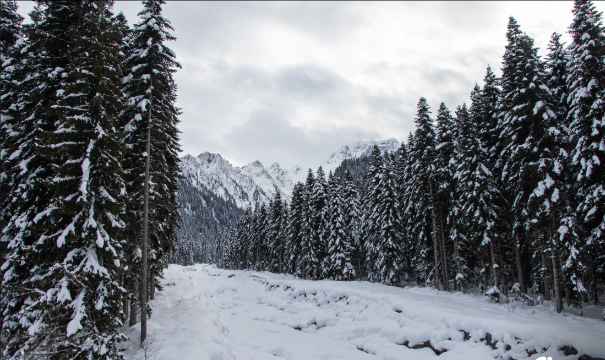

( a bread with beans, Georgian traditional dish). The winemaking tradition is developed in the region, high-quality red wine, naturally semi-sweet Khvanchkara..
( a bread with beans, Georgian traditional dish). The winemaking tradition is developed in the region, high-quality red wine, naturally semi-sweet Khvanchkara..Racha is the historical-geographic site of Georgia that is situated in the north-east side of west Georgia. It is quite rich with cultural monuments and diverse nature. Racha is well-known with the masterpiece of Georgian architecture, Nikortsminda that is characterized with rich and sophisticated ornaments. In addition to the interesting cultural sites, you can enjoy chilly forests, alpine lakes, beautiful waterfalls and stunning views in Racha.
Racha is a region with a great history. The traces of human life was evidenced here in the Bronze Age. In the early period, Racha and Lechkhumi together created a Takveri( historical site). Takveri is mentioned in the 7th-century sources. Takveri was separated from Racha and Lechkhumi maintained the name. At the end of the 10th century, Racha Saeristavo ( territorial unit of medieval Georgia, Duchy) was set up, the first Eristavi( duke) of it was Rati Bakhvashi. In XII century David Narin abolished the Saeristavo, declared the area as a royal land. The Kakhaberidze ancestry has disappeared. In the XIV century, after the restoration of Sariavisto, Charelidze family had the title of Eristavi and later, in 1488, the family of Chkhetidze. In the second half of the 15th century, after the collapse of Georgia as a kingdom, Racha became the part of Samegrelo. In the XV century, the King of Imereti Bagrat III handed over Minda fortress to the dukes of Racha. In the XV-XVII centuries, the kings of Imereti owned slave land in Racha Saeristo. In 1789, Solomon II reigned in Imereti, who finally abolished the Racha Saeristavo. When the Imereti Kingdom became the part of the Russian Empire, the territory of Racha formed firstly Okrug( the unit of administrative autonomy of soviet union), then Mazra( administrative-territorial unit). Racha was ruled by several aristocrat families during different periods: Tsulukidze, Iashvili, Japaridze, Inasaridze, Lashkhishvili. Nowadays Racha is part of Racha-Lechkhumi and Kvemo Svaneti region.
Culture is diverse and interesting in Racha, with its folklore, cuisine and traditions. There are old public holidays such as Atagenoba, Bosloba etc. Racha folklore is distinguished and many explorers mentioned it. Famous Rachuli songs are "Kvedvrula", "Rashovda", "High in the mountains" and so on. The folk poetry of Racha is also preserved. There are a lot of legends about the establishment of villages and the etymology of their names.  Racha is famous for carpentry. In many parts of Georgia, you can find ode houses built by Rachvelebi (the people of Racha). These houses are characterized with beautiful decorations and ornaments. Rachuli cuisine is delicious and it attracts gourmets with its pot beans, Rachuli ham and Lobiani ( a bread with beans, Georgian traditional dish). The winemaking tradition is developed in the region, high-quality red wine, naturally semi-sweet Khvanchkara..
Racha is famous for carpentry. In many parts of Georgia, you can find ode houses built by Rachvelebi (the people of Racha). These houses are characterized with beautiful decorations and ornaments. Rachuli cuisine is delicious and it attracts gourmets with its pot beans, Rachuli ham and Lobiani
( a bread with beans, Georgian traditional dish). The winemaking tradition is developed in the region, high-quality red wine, naturally semi-sweet Khvanchkara..
There are many important cultural monuments in Racha from different periods. You can find magnificently decorated temples, interesting frescos, special patterns of Georgian architecture that harmoniously blend with beautiful nature of Racha. The fresh air, the waterfalls hidden in the greenery, the crystal clear alpine lakes, glaciers and lush meadows make it a real paradise and will leave adventure lovers speechless.